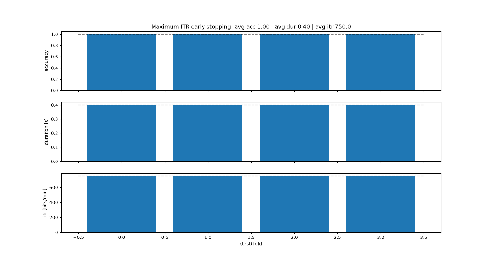
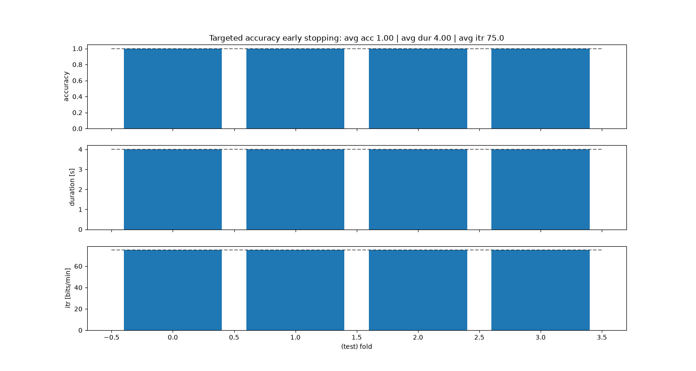
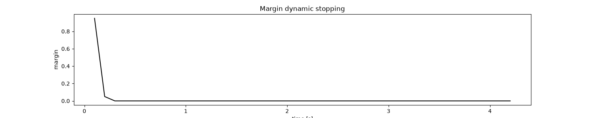
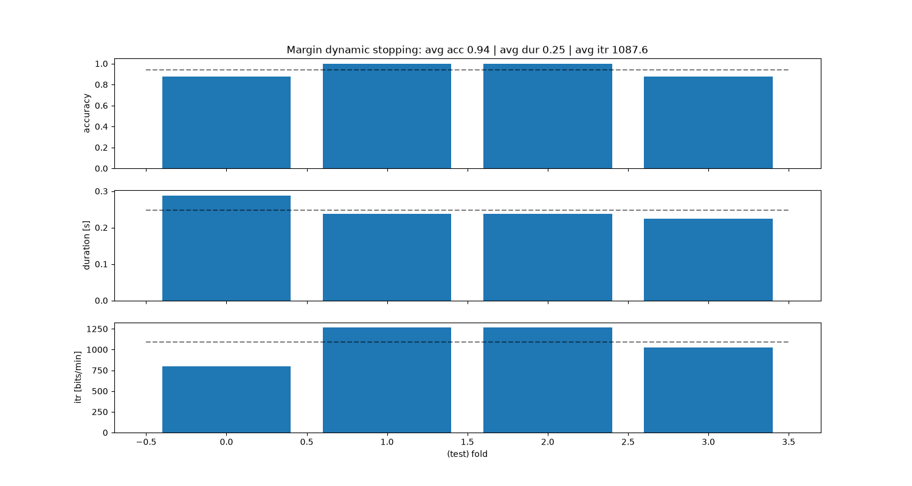
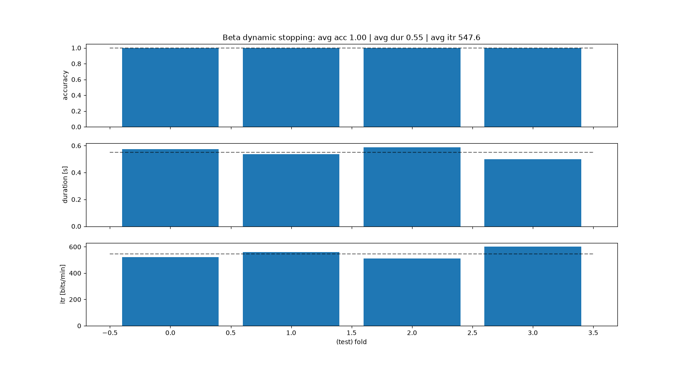
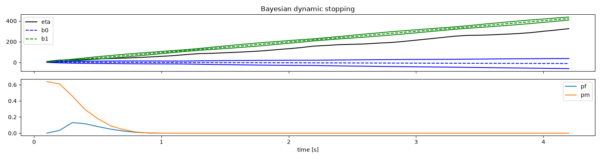
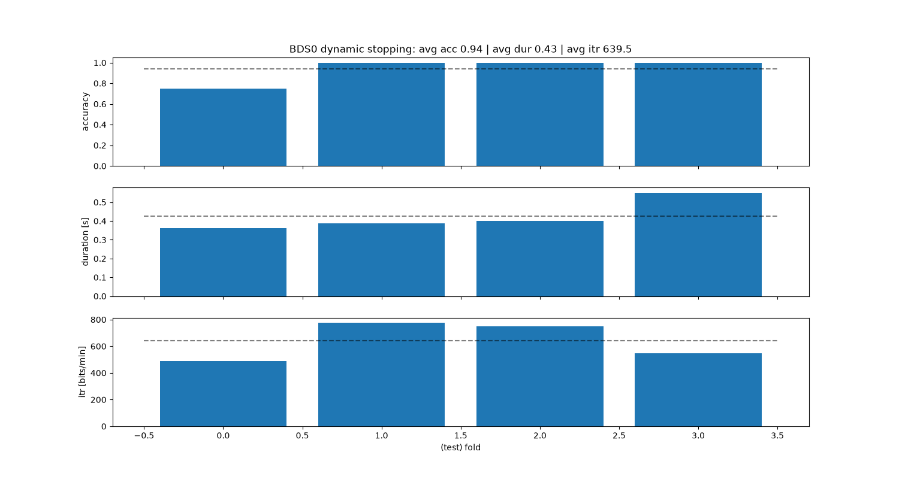
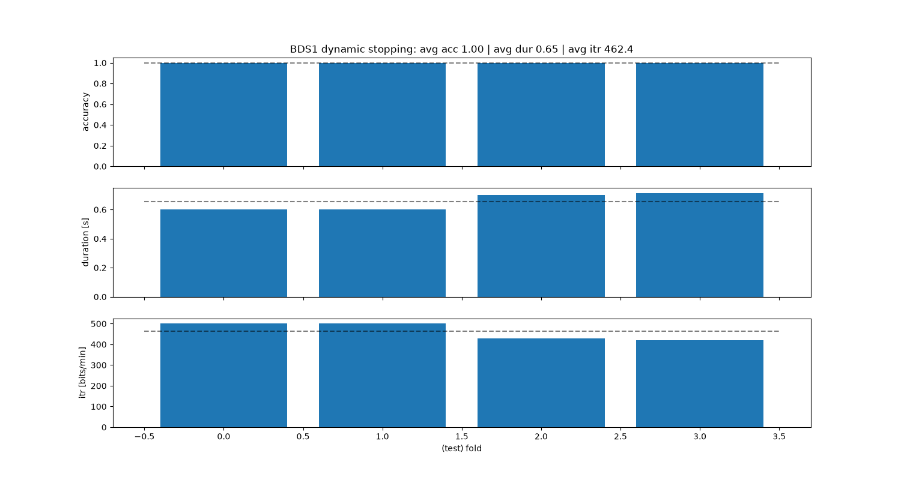
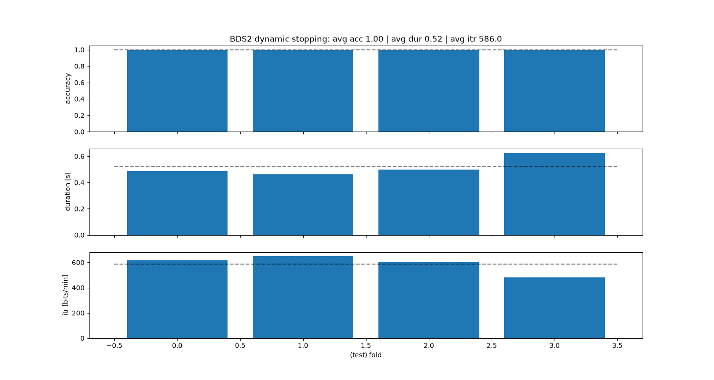
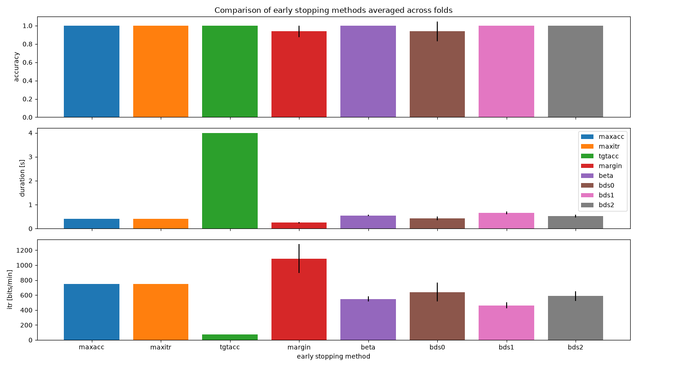

Note
Go to the end to download the full example code.
Early stopping
This script shows how to use early stopping from PyntBCI for decoding c-VEP data. Early stopping refers to determining when to stop the processing or decoding of a trial based on the reliability of the input data. Early stopping may be of two kinds: static stopping and dynamic stopping. In static stopping, an optimal fixes stopping time is learned, while in dynamic stopping the optimal stopping time depends on reaching a certain criterion, which may naturally lead to a variable stopping time.
The data used in this script come from Thielen et al. (2021), see references [1] and [2].
References
import matplotlib.pyplot as plt
import numpy as np
import pyntbci
Simulate data
The cell below simulates some synthetic c-VEP data in response to a circularly shifted m-sequence.
FS = 120
PR = 60
SHIFT = 2
v = pyntbci.stimulus.make_m_sequence()
SHIFTS = np.arange(0, v.shape[1], SHIFT)
V = pyntbci.stimulus.shift(v, SHIFT)
V = np.repeat(V, FS // PR, axis=1)
N_CLASSES = V.shape[0]
CYCLE_SIZE = V.shape[1] / FS
LAGS = SHIFTS / PR
N_TRIALS = 1 * N_CLASSES
N_CHANNELS = 16
N_SAMPLES = int(4 * CYCLE_SIZE * FS)
N_COMPONENTS = 3
N_FILTER_BANDS = 4
ENCODING_LENGTH = 0.3
SEED = 42
y = np.random.permutation(np.arange(N_TRIALS) % N_CLASSES)
X, y, V = pyntbci.eeg.generate_c_vep(
N_TRIALS, N_CHANNELS, N_SAMPLES, FS, y=y, stimulus=V, primary_channels=8, random_state=SEED
)
N_FOLDS = 4
folds = np.repeat(np.arange(N_FOLDS), int(N_TRIALS / N_FOLDS))
MAX_TIME = 4.0
SEGMENT_TIME = 0.1
N_SEGMENTS = int(N_SAMPLES / SEGMENT_TIME)
Maximum accuracy static stopping
The “maximum accuracy” method is a static stopping method that learns one stopping time that given some training data reaches the maximum classification accuracy. During testing, all trials will stop as soon as that time is reached, hence static stopping.
# Loop folds
accuracy_max_acc = np.zeros(N_FOLDS)
duration_max_acc = np.zeros(N_FOLDS)
for i_fold in range(N_FOLDS):
# Split data to train and valid set
X_trn, y_trn = X[folds != i_fold, :, :], y[folds != i_fold]
X_tst, y_tst = X[folds == i_fold, :, :], y[folds == i_fold]
# Train template-matching classifier
rcca = pyntbci.classifiers.rCCA(
stimulus=V,
fs=FS,
event="refe",
encoding_length=0.3,
score_metric="correlation",
)
max_acc = pyntbci.stopping.CriterionStopping(rcca, SEGMENT_TIME, FS, criterion="accuracy", optimization="max")
max_acc.fit(X_trn, y_trn)
# Loop segments
yh_tst = np.zeros(X_tst.shape[0])
dur_tst = np.zeros(X_tst.shape[0])
for i_segment in range(N_SEGMENTS):
# Apply template-matching classifier
tmp = max_acc.predict(X_tst[:, :, : int((1 + i_segment) * SEGMENT_TIME * FS)])
# Check stopped
idx = np.logical_and(tmp >= 0, dur_tst == 0)
yh_tst[idx] = tmp[idx]
dur_tst[idx] = (1 + i_segment) * SEGMENT_TIME
if np.all(dur_tst > 0):
break
# Compute accuracy
accuracy_max_acc[i_fold] = np.mean(yh_tst == y_tst)
duration_max_acc[i_fold] = np.mean(dur_tst)
# Compute ITR
itr_max_acc = pyntbci.utilities.itr(N_CLASSES, accuracy_max_acc, duration_max_acc)
# Plot accuracy (over folds)
fig, ax = plt.subplots(3, 1, figsize=(15, 8), sharex=True)
ax[0].bar(np.arange(N_FILTER_BANDS), accuracy_max_acc)
ax[0].hlines(np.mean(accuracy_max_acc), -0.5, N_FOLDS - 0.5, linestyle="--", color="k", alpha=0.5)
ax[1].bar(np.arange(N_FOLDS), duration_max_acc)
ax[1].hlines(np.mean(duration_max_acc), -0.5, N_FOLDS - 0.5, linestyle="--", color="k", alpha=0.5)
ax[2].bar(np.arange(N_FOLDS), itr_max_acc)
ax[2].hlines(np.mean(itr_max_acc), -0.5, N_FOLDS - 0.5, linestyle="--", color="k", alpha=0.5)
ax[2].set_xlabel("(test) fold")
ax[0].set_ylabel("accuracy")
ax[1].set_ylabel("duration [s]")
ax[2].set_ylabel("itr [bits/min]")
ax[0].set_title(
f"Maximum accuracy early stopping: avg acc {accuracy_max_acc.mean():.2f} | "
+ f"avg dur {duration_max_acc.mean():.2f} | avg itr {itr_max_acc.mean():.1f}"
)
# Print accuracy (average and standard deviation over folds)
print("Maximum accuracy:")
print(f"\tAccuracy: avg={accuracy_max_acc.mean():.2f} with std={accuracy_max_acc.std():.2f}")
print(f"\tDuration: avg={duration_max_acc.mean():.2f} with std={duration_max_acc.std():.2f}")
print(f"\tITR: avg={itr_max_acc.mean():.1f} with std={itr_max_acc.std():.2f}")
Maximum accuracy:
Accuracy: avg=1.00 with std=0.00
Duration: avg=0.40 with std=0.00
ITR: avg=750.0 with std=0.00
Maximum ITR static stopping
The “maximum ITR” method is a static stopping method that learns one stopping time that given some training data reaches the maximum information-transfer rate (ITR). During testing, all trials will stop as soon as that time is reached, hence static stopping.
# Loop folds
accuracy_max_itr = np.zeros(N_FOLDS)
duration_max_itr = np.zeros(N_FOLDS)
for i_fold in range(N_FOLDS):
# Split data to train and valid set
X_trn, y_trn = X[folds != i_fold, :, :], y[folds != i_fold]
X_tst, y_tst = X[folds == i_fold, :, :], y[folds == i_fold]
# Train template-matching classifier
rcca = pyntbci.classifiers.rCCA(
stimulus=V,
fs=FS,
event="refe",
encoding_length=0.3,
score_metric="correlation",
)
max_itr = pyntbci.stopping.CriterionStopping(
rcca, SEGMENT_TIME, FS, criterion="itr", optimization="max", smooth_width=0.3
)
max_itr.fit(X_trn, y_trn)
# Loop segments
yh_tst = np.zeros(X_tst.shape[0])
dur_tst = np.zeros(X_tst.shape[0])
for i_segment in range(N_SEGMENTS):
# Apply template-matching classifier
tmp = max_itr.predict(X_tst[:, :, : int((1 + i_segment) * SEGMENT_TIME * FS)])
# Check stopped
idx = np.logical_and(tmp >= 0, dur_tst == 0)
yh_tst[idx] = tmp[idx]
dur_tst[idx] = (1 + i_segment) * SEGMENT_TIME
if np.all(dur_tst > 0):
break
# Compute accuracy
accuracy_max_itr[i_fold] = np.mean(yh_tst == y_tst)
duration_max_itr[i_fold] = np.mean(dur_tst)
# Compute ITR
itr_max_itr = pyntbci.utilities.itr(N_CLASSES, accuracy_max_itr, duration_max_itr)
# Plot accuracy (over folds)
fig, ax = plt.subplots(3, 1, figsize=(15, 8), sharex=True)
ax[0].bar(np.arange(N_FOLDS), accuracy_max_itr)
ax[0].hlines(np.mean(accuracy_max_itr), -0.5, N_FOLDS - 0.5, linestyle="--", color="k", alpha=0.5)
ax[1].bar(np.arange(N_FOLDS), duration_max_itr)
ax[1].hlines(np.mean(duration_max_itr), -0.5, N_FOLDS - 0.5, linestyle="--", color="k", alpha=0.5)
ax[2].bar(np.arange(N_FOLDS), itr_max_itr)
ax[2].hlines(np.mean(itr_max_itr), -0.5, N_FOLDS - 0.5, linestyle="--", color="k", alpha=0.5)
ax[2].set_xlabel("(test) fold")
ax[0].set_ylabel("accuracy")
ax[1].set_ylabel("duration [s]")
ax[2].set_ylabel("itr [bits/min]")
ax[0].set_title(
f"Maximum ITR early stopping: avg acc {accuracy_max_itr.mean():.2f} | "
+ f"avg dur {duration_max_itr.mean():.2f} | avg itr {itr_max_itr.mean():.1f}"
)
# Print accuracy (average and standard deviation over folds)
print("Maximum ITR:")
print(f"\tAccuracy: avg={accuracy_max_itr.mean():.2f} with std={accuracy_max_itr.std():.2f}")
print(f"\tDuration: avg={duration_max_itr.mean():.2f} with std={duration_max_itr.std():.2f}")
print(f"\tITR: avg={itr_max_itr.mean():.1f} with std={itr_max_itr.std():.2f}")

Maximum ITR:
Accuracy: avg=1.00 with std=0.00
Duration: avg=0.40 with std=0.00
ITR: avg=750.0 with std=0.00
Targeted accuracy static stopping
The “targeted accuracy” method is a static stopping method that learns one stopping time that given some training data reaches a preset targeted accuracy. During testing, all trials will stop as soon as that time is reached, hence static stopping.
# Target accuracy
target_p = 0.90 ** (1 / N_SEGMENTS)
# Loop folds
accuracy_tgt_acc = np.zeros(N_FOLDS)
duration_tgt_acc = np.zeros(N_FOLDS)
for i_fold in range(N_FOLDS):
# Split data to train and valid set
X_trn, y_trn = X[folds != i_fold, :, :], y[folds != i_fold]
X_tst, y_tst = X[folds == i_fold, :, :], y[folds == i_fold]
# Train template-matching classifier
rcca = pyntbci.classifiers.rCCA(
stimulus=V,
fs=FS,
event="refe",
encoding_length=0.3,
score_metric="correlation",
)
tgt_acc = pyntbci.stopping.CriterionStopping(
rcca, N_FOLDS, FS, criterion="accuracy", optimization="target", target=target_p
)
tgt_acc.fit(X_trn, y_trn)
# Loop segments
yh_tst = np.zeros(X_tst.shape[0])
dur_tst = np.zeros(X_tst.shape[0])
for i_segment in range(N_SEGMENTS):
# Apply template-matching classifier
tmp = tgt_acc.predict(X_tst[:, :, : int((1 + i_segment) * SEGMENT_TIME * FS)])
# Check stopped
idx = np.logical_and(tmp >= 0, dur_tst == 0)
yh_tst[idx] = tmp[idx]
dur_tst[idx] = (1 + i_segment) * SEGMENT_TIME
if np.all(dur_tst > 0):
break
# Compute accuracy
accuracy_tgt_acc[i_fold] = np.mean(yh_tst == y_tst)
duration_tgt_acc[i_fold] = np.mean(dur_tst)
# Compute ITR
itr_tgt_acc = pyntbci.utilities.itr(N_CLASSES, accuracy_tgt_acc, duration_tgt_acc)
# Plot accuracy (over folds)
fig, ax = plt.subplots(3, 1, figsize=(15, 8), sharex=True)
ax[0].bar(np.arange(N_FOLDS), accuracy_tgt_acc)
ax[0].hlines(np.mean(accuracy_tgt_acc), -0.5, N_FOLDS - 0.5, linestyle="--", color="k", alpha=0.5)
ax[1].bar(np.arange(N_FOLDS), duration_tgt_acc)
ax[1].hlines(np.mean(duration_tgt_acc), -0.5, N_FOLDS - 0.5, linestyle="--", color="k", alpha=0.5)
ax[2].bar(np.arange(N_FOLDS), itr_tgt_acc)
ax[2].hlines(np.mean(itr_tgt_acc), -0.5, N_FOLDS - 0.5, linestyle="--", color="k", alpha=0.5)
ax[2].set_xlabel("(test) fold")
ax[0].set_ylabel("accuracy")
ax[1].set_ylabel("duration [s]")
ax[2].set_ylabel("itr [bits/min]")
ax[0].set_title(
f"Targeted accuracy early stopping: avg acc {accuracy_tgt_acc.mean():.2f} | "
+ f"avg dur {duration_tgt_acc.mean():.2f} | avg itr {itr_tgt_acc.mean():.1f}"
)
# Print accuracy (average and standard deviation over folds)
print("Targeted accuracy:")
print(f"\tAccuracy: avg={accuracy_tgt_acc.mean():.2f} with std={accuracy_tgt_acc.std():.2f}")
print(f"\tDuration: avg={duration_tgt_acc.mean():.2f} with std={duration_tgt_acc.std():.2f}")
print(f"\tITR: avg={itr_tgt_acc.mean():.1f} with std={itr_tgt_acc.std():.2f}")

Targeted accuracy:
Accuracy: avg=1.00 with std=0.00
Duration: avg=4.00 with std=0.00
ITR: avg=75.0 with std=0.00
Margin dynamic stopping
The margin method learns threshold margins (i.e., the difference between the best and second-best score) to stop. These margins are defined as such that a targeted accuracy is reached.
References:
# Target accuracy
target_p = 0.90 ** (1 / N_SEGMENTS)
# Fit classifier
rcca = pyntbci.classifiers.rCCA(stimulus=V, fs=FS, event="refe", encoding_length=0.3, score_metric="correlation")
margin = pyntbci.stopping.MarginStopping(rcca, segment_time=SEGMENT_TIME, fs=FS, target_p=target_p, max_time=MAX_TIME)
margin.fit(X, y)
# Plot dynamic stopping
plt.figure(figsize=(15, 3))
plt.plot(np.arange(1, 1 + margin.margins_.size) * SEGMENT_TIME, margin.margins_, c="k")
plt.xlabel("time [s]")
plt.ylabel("margin")
plt.title("Margin dynamic stopping")
# Loop folds
accuracy_margin = np.zeros(N_FOLDS)
duration_margin = np.zeros(N_FOLDS)
for i_fold in range(N_FOLDS):
# Split data to train and valid set
X_trn, y_trn = X[folds != i_fold, :, :], y[folds != i_fold]
X_tst, y_tst = X[folds == i_fold, :, :], y[folds == i_fold]
# Train template-matching classifier
rcca = pyntbci.classifiers.rCCA(
stimulus=V,
fs=FS,
event="refe",
encoding_length=0.3,
score_metric="correlation",
)
margin = pyntbci.stopping.MarginStopping(rcca, segment_time=SEGMENT_TIME, fs=FS, target_p=target_p)
margin.fit(X_trn, y_trn)
# Loop segments
yh_tst = np.zeros(X_tst.shape[0])
dur_tst = np.zeros(X_tst.shape[0])
for i_segment in range(N_SEGMENTS):
# Apply template-matching classifier
tmp = margin.predict(X_tst[:, :, : int((1 + i_segment) * SEGMENT_TIME * FS)])
# Check stopped
idx = np.logical_and(tmp >= 0, dur_tst == 0)
yh_tst[idx] = tmp[idx]
dur_tst[idx] = (1 + i_segment) * SEGMENT_TIME
if np.all(dur_tst > 0):
break
# Compute accuracy
accuracy_margin[i_fold] = np.mean(yh_tst == y_tst)
duration_margin[i_fold] = np.mean(dur_tst)
# Compute ITR
itr_margin = pyntbci.utilities.itr(N_CLASSES, accuracy_margin, duration_margin)
# Plot accuracy (over folds)
fig, ax = plt.subplots(3, 1, figsize=(15, 8), sharex=True)
ax[0].bar(np.arange(N_FOLDS), accuracy_margin)
ax[0].hlines(np.mean(accuracy_margin), -0.5, N_FOLDS - 0.5, linestyle="--", color="k", alpha=0.5)
ax[1].bar(np.arange(N_FOLDS), duration_margin)
ax[1].hlines(np.mean(duration_margin), -0.5, N_FOLDS - 0.5, linestyle="--", color="k", alpha=0.5)
ax[2].bar(np.arange(N_FOLDS), itr_margin)
ax[2].hlines(np.mean(itr_margin), -0.5, N_FOLDS - 0.5, linestyle="--", color="k", alpha=0.5)
ax[2].set_xlabel("(test) fold")
ax[0].set_ylabel("accuracy")
ax[1].set_ylabel("duration [s]")
ax[2].set_ylabel("itr [bits/min]")
ax[0].set_title(
f"Margin dynamic stopping: avg acc {accuracy_margin.mean():.2f} | "
+ f"avg dur {duration_margin.mean():.2f} | avg itr {itr_margin.mean():.1f}"
)
# Print accuracy (average and standard deviation over folds)
print("Margin:")
print(f"\tAccuracy: avg={accuracy_margin.mean():.2f} with std={accuracy_margin.std():.2f}")
print(f"\tDuration: avg={duration_margin.mean():.2f} with std={duration_margin.std():.2f}")
print(f"\tITR: avg={itr_margin.mean():.1f} with std={itr_margin.std():.2f}")


Margin:
Accuracy: avg=0.94 with std=0.06
Duration: avg=0.25 with std=0.02
ITR: avg=1087.6 with std=192.38
Beta dynamic stopping
The beta method fits a beta distribution to the non-maximum scores (i.e., if correlation, then correlation+1)/2), and tests the probability of the maximum correlation to belong to that beta distribution.
References:
# Target accuracy
target_p = 0.90 ** (1 / N_SEGMENTS)
# Loop folds
accuracy_beta = np.zeros(N_FOLDS)
duration_beta = np.zeros(N_FOLDS)
for i_fold in range(N_FOLDS):
# Split data to train and valid set
X_trn, y_trn = X[folds != i_fold, :, :], y[folds != i_fold]
X_tst, y_tst = X[folds == i_fold, :, :], y[folds == i_fold]
# Train template-matching classifier
rcca = pyntbci.classifiers.rCCA(
stimulus=V,
fs=FS,
event="refe",
encoding_length=0.3,
score_metric="correlation",
)
beta = pyntbci.stopping.DistributionStopping(
rcca, segment_time=SEGMENT_TIME, fs=FS, target_p=target_p, distribution="beta", max_time=MAX_TIME
)
beta.fit(X, y)
# Loop segments
yh_tst = np.zeros(X_tst.shape[0])
dur_tst = np.zeros(X_tst.shape[0])
for i_segment in range(N_SEGMENTS):
# Apply template-matching classifier
tmp = beta.predict(X_tst[:, :, : int((1 + i_segment) * SEGMENT_TIME * FS)])
# Check stopped
idx = np.logical_and(tmp >= 0, dur_tst == 0)
yh_tst[idx] = tmp[idx]
dur_tst[idx] = (1 + i_segment) * SEGMENT_TIME
if np.all(dur_tst > 0):
break
# Compute accuracy
accuracy_beta[i_fold] = np.mean(yh_tst == y_tst)
duration_beta[i_fold] = np.mean(dur_tst)
# Compute ITR
itr_beta = pyntbci.utilities.itr(N_CLASSES, accuracy_beta, duration_beta)
# Plot accuracy (over folds)
fig, ax = plt.subplots(3, 1, figsize=(15, 8), sharex=True)
ax[0].bar(np.arange(N_FOLDS), accuracy_beta)
ax[0].hlines(np.mean(accuracy_beta), -0.5, N_FOLDS - 0.5, linestyle="--", color="k", alpha=0.5)
ax[1].bar(np.arange(N_FOLDS), duration_beta)
ax[1].hlines(np.mean(duration_beta), -0.5, N_FOLDS - 0.5, linestyle="--", color="k", alpha=0.5)
ax[2].bar(np.arange(N_FOLDS), itr_beta)
ax[2].hlines(np.mean(itr_beta), -0.5, N_FOLDS - 0.5, linestyle="--", color="k", alpha=0.5)
ax[2].set_xlabel("(test) fold")
ax[0].set_ylabel("accuracy")
ax[1].set_ylabel("duration [s]")
ax[2].set_ylabel("itr [bits/min]")
ax[0].set_title(
f"Beta dynamic stopping: avg acc {accuracy_beta.mean():.2f} | "
+ f"avg dur {duration_beta.mean():.2f} | avg itr {itr_beta.mean():.1f}"
)
# Print accuracy (average and standard deviation over folds)
print("Beta:")
print(f"\tAccuracy: avg={accuracy_beta.mean():.2f} with std={accuracy_beta.std():.2f}")
print(f"\tDuration: avg={duration_beta.mean():.2f} with std={duration_beta.std():.2f}")
print(f"\tITR: avg={itr_beta.mean():.1f} with std={itr_beta.std():.2f}")

Beta:
Accuracy: avg=1.00 with std=0.00
Duration: avg=0.55 with std=0.03
ITR: avg=547.6 with std=34.97
Bayesian dynamic stopping (BDS0)
The Bayesian method fits Gaussian distributions for target and non-target responses, and calculates a stopping threshold using these and a cost criterion. This method comes in three flavours: bds0, bds1, and bds2.
References:
response brain-computer interfacing
# Cost ratio and target probabilities
cr = 1.0
# Fit classifier
rcca = pyntbci.classifiers.rCCA(stimulus=V, fs=FS, event="refe", encoding_length=0.3, score_metric="inner")
bayes = pyntbci.stopping.BayesStopping(rcca, segment_time=SEGMENT_TIME, fs=FS, cr=cr, max_time=MAX_TIME)
bayes.fit(X, y)
# Plot dynamic stopping
fig, ax = plt.subplots(2, 1, figsize=(15, 4), sharex=True)
ax[0].plot(np.arange(1, 1 + bayes.eta_.size) * SEGMENT_TIME, bayes.eta_, c="k", label="eta")
ax[0].plot(np.arange(1, 1 + bayes.eta_.size) * SEGMENT_TIME, bayes.alpha_ * bayes.b0_, "--b", label="b0")
ax[0].plot(np.arange(1, 1 + bayes.eta_.size) * SEGMENT_TIME, bayes.alpha_ * bayes.b1_, "--g", label="b1")
ax[0].plot(np.arange(1, 1 + bayes.eta_.size) * SEGMENT_TIME, bayes.alpha_ * bayes.b0_ - bayes.s0_, "b")
ax[0].plot(np.arange(1, 1 + bayes.eta_.size) * SEGMENT_TIME, bayes.alpha_ * bayes.b1_ - bayes.s1_, "g")
ax[0].plot(np.arange(1, 1 + bayes.eta_.size) * SEGMENT_TIME, bayes.alpha_ * bayes.b0_ + bayes.s0_, "b")
ax[0].plot(np.arange(1, 1 + bayes.eta_.size) * SEGMENT_TIME, bayes.alpha_ * bayes.b1_ + bayes.s1_, "g")
ax[0].legend()
ax[1].plot(np.arange(1, 1 + bayes.eta_.size) * SEGMENT_TIME, bayes.pf_, label="pf")
ax[1].plot(np.arange(1, 1 + bayes.eta_.size) * SEGMENT_TIME, bayes.pm_, label="pm")
ax[1].legend()
ax[1].set_xlabel("time [s]")
ax[0].set_title("Bayesian dynamic stopping")
fig.tight_layout()
# Loop folds
accuracy_bds0 = np.zeros(N_FOLDS)
duration_bds0 = np.zeros(N_FOLDS)
for i_fold in range(N_FOLDS):
# Split data to train and valid set
X_trn, y_trn = X[folds != i_fold, :, :], y[folds != i_fold]
X_tst, y_tst = X[folds == i_fold, :, :], y[folds == i_fold]
# Train template-matching classifier
rcca = pyntbci.classifiers.rCCA(stimulus=V, fs=FS, event="refe", encoding_length=0.3, score_metric="inner")
bayes = pyntbci.stopping.BayesStopping(
rcca, segment_time=SEGMENT_TIME, fs=FS, method="bds0", cr=cr, max_time=MAX_TIME
)
bayes.fit(X_trn, y_trn)
# Apply template-matching classifier
yh_tst = np.zeros(X_tst.shape[0])
dur_tst = np.zeros(X_tst.shape[0])
for i_segment in range(N_SEGMENTS):
tmp = bayes.predict(X_tst[:, :, : int((1 + i_segment) * SEGMENT_TIME * FS)])
idx = np.logical_and(tmp >= 0, dur_tst == 0)
yh_tst[idx] = tmp[idx]
dur_tst[idx] = (1 + i_segment) * SEGMENT_TIME
if np.all(dur_tst > 0):
break
# Compute accuracy
accuracy_bds0[i_fold] = np.mean(yh_tst == y_tst)
duration_bds0[i_fold] = np.mean(dur_tst)
# Compute ITR
itr_bds0 = pyntbci.utilities.itr(N_CLASSES, accuracy_bds0, duration_bds0)
# Plot accuracy (over folds)
fig, ax = plt.subplots(3, 1, figsize=(15, 8), sharex=True)
ax[0].bar(np.arange(N_FOLDS), accuracy_bds0)
ax[0].hlines(np.mean(accuracy_bds0), -0.5, N_FOLDS - 0.5, linestyle="--", color="k", alpha=0.5)
ax[1].bar(np.arange(N_FOLDS), duration_bds0)
ax[1].hlines(np.mean(duration_bds0), -0.5, N_FOLDS - 0.5, linestyle="--", color="k", alpha=0.5)
ax[2].bar(np.arange(N_FOLDS), itr_bds0)
ax[2].hlines(np.mean(itr_bds0), -0.5, N_FOLDS - 0.5, linestyle="--", color="k", alpha=0.5)
ax[2].set_xlabel("(test) fold")
ax[0].set_ylabel("accuracy")
ax[1].set_ylabel("duration [s]")
ax[2].set_ylabel("itr [bits/min]")
ax[0].set_title(
f"BDS0 dynamic stopping: avg acc {accuracy_bds0.mean():.2f} | "
+ f"avg dur {duration_bds0.mean():.2f} | avg itr {itr_bds0.mean():.1f}"
)
# Print accuracy (average and standard deviation over folds)
print("BDS0:")
print(f"\tAccuracy: avg={accuracy_bds0.mean():.2f} with std={accuracy_bds0.std():.2f}")
print(f"\tDuration: avg={duration_bds0.mean():.2f} with std={duration_bds0.std():.2f}")
print(f"\tITR: avg={itr_bds0.mean():.1f} with std={itr_bds0.std():.2f}")


BDS0:
Accuracy: avg=0.94 with std=0.11
Duration: avg=0.43 with std=0.07
ITR: avg=639.5 with std=124.56
Bayesian dynamic stopping (BDS1)
The Bayesian method fits Gaussian distributions for target and non-target responses, and calculates a stopping threshold using these and a cost criterion. This method comes in three flavours: bds0, bds1, and bds2.
References:
response brain-computer interfacing
# Cost ratio and target probabilities
cr = 1.0
target_pf = 0.05
target_pd = 0.80
# Loop folds
accuracy_bds1 = np.zeros(N_FOLDS)
duration_bds1 = np.zeros(N_FOLDS)
for i_fold in range(N_FOLDS):
# Split data to train and valid set
X_trn, y_trn = X[folds != i_fold, :, :], y[folds != i_fold]
X_tst, y_tst = X[folds == i_fold, :, :], y[folds == i_fold]
# Train template-matching classifier
rcca = pyntbci.classifiers.rCCA(stimulus=V, fs=FS, event="refe", encoding_length=0.3, score_metric="inner")
bayes = pyntbci.stopping.BayesStopping(
rcca,
segment_time=SEGMENT_TIME,
fs=FS,
method="bds1",
cr=cr,
target_pf=target_pf,
target_pd=target_pd,
max_time=MAX_TIME,
)
bayes.fit(X_trn, y_trn)
# Apply template-matching classifier
yh_tst = np.zeros(X_tst.shape[0])
dur_tst = np.zeros(X_tst.shape[0])
for i_segment in range(N_SEGMENTS):
tmp = bayes.predict(X_tst[:, :, : int((1 + i_segment) * SEGMENT_TIME * FS)])
idx = np.logical_and(tmp >= 0, dur_tst == 0)
yh_tst[idx] = tmp[idx]
dur_tst[idx] = (1 + i_segment) * SEGMENT_TIME
if np.all(dur_tst > 0):
break
# Compute accuracy
accuracy_bds1[i_fold] = np.mean(yh_tst == y_tst)
duration_bds1[i_fold] = np.mean(dur_tst)
# Compute ITR
itr_bds1 = pyntbci.utilities.itr(N_CLASSES, accuracy_bds1, duration_bds1)
# Plot accuracy (over folds)
fig, ax = plt.subplots(3, 1, figsize=(15, 8), sharex=True)
ax[0].bar(np.arange(N_FOLDS), accuracy_bds1)
ax[0].hlines(np.mean(accuracy_bds1), -0.5, N_FOLDS - 0.5, linestyle="--", color="k", alpha=0.5)
ax[1].bar(np.arange(N_FOLDS), duration_bds1)
ax[1].hlines(np.mean(duration_bds1), -0.5, N_FOLDS - 0.5, linestyle="--", color="k", alpha=0.5)
ax[2].bar(np.arange(N_FOLDS), itr_bds1)
ax[2].hlines(np.mean(itr_bds1), -0.5, N_FOLDS - 0.5, linestyle="--", color="k", alpha=0.5)
ax[2].set_xlabel("(test) fold")
ax[0].set_ylabel("accuracy")
ax[1].set_ylabel("duration [s]")
ax[2].set_ylabel("itr [bits/min]")
ax[0].set_title(
f"BDS1 dynamic stopping: avg acc {accuracy_bds1.mean():.2f} | "
+ f"avg dur {duration_bds1.mean():.2f} | avg itr {itr_bds1.mean():.1f}"
)
# Print accuracy (average and standard deviation over folds)
print("BDS1:")
print(f"\tAccuracy: avg={accuracy_bds1.mean():.2f} with std={accuracy_bds1.std():.2f}")
print(f"\tDuration: avg={duration_bds1.mean():.2f} with std={duration_bds1.std():.2f}")
print(f"\tITR: avg={itr_bds1.mean():.1f} with std={itr_bds1.std():.2f}")

BDS1:
Accuracy: avg=1.00 with std=0.00
Duration: avg=0.65 with std=0.05
ITR: avg=462.4 with std=37.69
Bayesian dynamic stopping (BDS2)
The Bayesian method fits Gaussian distributions for target and non-target responses, and calculates a stopping threshold using these and a cost criterion. This method comes in three flavours: bds0, bds1, and bds2.
References:
response brain-computer interfacing
# Cost ratio and target probabilities
cr = 1.0
target_pf = 0.05
target_pd = 0.80
# Loop folds
accuracy_bds2 = np.zeros(N_FOLDS)
duration_bds2 = np.zeros(N_FOLDS)
for i_fold in range(N_FOLDS):
# Split data to train and valid set
X_trn, y_trn = X[folds != i_fold, :, :], y[folds != i_fold]
X_tst, y_tst = X[folds == i_fold, :, :], y[folds == i_fold]
# Train template-matching classifier
rcca = pyntbci.classifiers.rCCA(stimulus=V, fs=FS, event="refe", encoding_length=0.3, score_metric="inner")
bayes = pyntbci.stopping.BayesStopping(
rcca,
segment_time=SEGMENT_TIME,
fs=FS,
method="bds2",
cr=cr,
target_pf=target_pf,
target_pd=target_pd,
max_time=MAX_TIME,
)
bayes.fit(X_trn, y_trn)
# Apply template-matching classifier
yh_tst = np.zeros(X_tst.shape[0])
dur_tst = np.zeros(X_tst.shape[0])
for i_segment in range(N_SEGMENTS):
tmp = bayes.predict(X_tst[:, :, : int((1 + i_segment) * SEGMENT_TIME * FS)])
idx = np.logical_and(tmp >= 0, dur_tst == 0)
yh_tst[idx] = tmp[idx]
dur_tst[idx] = (1 + i_segment) * SEGMENT_TIME
if np.all(dur_tst > 0):
break
# Compute accuracy
accuracy_bds2[i_fold] = np.mean(yh_tst == y_tst)
duration_bds2[i_fold] = np.mean(dur_tst)
# Compute ITR
itr_bds2 = pyntbci.utilities.itr(N_CLASSES, accuracy_bds2, duration_bds2)
# Plot accuracy (over folds)
fig, ax = plt.subplots(3, 1, figsize=(15, 8), sharex=True)
ax[0].bar(np.arange(N_FOLDS), accuracy_bds2)
ax[0].hlines(np.mean(accuracy_bds2), -0.5, N_FOLDS - 0.5, linestyle="--", color="k", alpha=0.5)
ax[1].bar(np.arange(N_FOLDS), duration_bds2)
ax[1].hlines(np.mean(duration_bds2), -0.5, N_FOLDS - 0.5, linestyle="--", color="k", alpha=0.5)
ax[2].bar(np.arange(N_FOLDS), itr_bds2)
ax[2].hlines(np.mean(itr_bds2), -0.5, N_FOLDS - 0.5, linestyle="--", color="k", alpha=0.5)
ax[2].set_xlabel("(test) fold")
ax[0].set_ylabel("accuracy")
ax[1].set_ylabel("duration [s]")
ax[2].set_ylabel("itr [bits/min]")
ax[0].set_title(
f"BDS2 dynamic stopping: avg acc {accuracy_bds2.mean():.2f} | "
+ f"avg dur {duration_bds2.mean():.2f} | avg itr {itr_bds2.mean():.1f}"
)
# Print accuracy (average and standard deviation over folds)
print("BDS2:")
print(f"\tAccuracy: avg={accuracy_bds2.mean():.2f} with std={accuracy_bds2.std():.2f}")
print(f"\tDuration: avg={duration_bds2.mean():.2f} with std={duration_bds2.std():.2f}")
print(f"\tITR: avg={itr_bds2.mean():.1f} with std={itr_bds2.std():.2f}")

BDS2:
Accuracy: avg=1.00 with std=0.00
Duration: avg=0.52 with std=0.06
ITR: avg=586.0 with std=63.68
Overall comparison
Comparison of the presented stopping methods. Note, each of these use default parameters that might need fine-tuning. Additionally, the evaluation is performed on a single participant only.
# Plot accuracy
width = 0.8
fig, ax = plt.subplots(3, 1, figsize=(15, 8), sharex=True)
ax[0].bar(0, accuracy_max_acc.mean(), width=width, yerr=accuracy_max_acc.std(), label="maxacc")
ax[0].bar(1, accuracy_max_itr.mean(), width=width, yerr=accuracy_max_itr.std(), label="maxitr")
ax[0].bar(2, accuracy_tgt_acc.mean(), width=width, yerr=accuracy_tgt_acc.std(), label="tgtacc")
ax[0].bar(3, accuracy_margin.mean(), width=width, yerr=accuracy_margin.std(), label="margin")
ax[0].bar(4, accuracy_beta.mean(), width=width, yerr=accuracy_beta.std(), label="beta")
ax[0].bar(5, accuracy_bds0.mean(), width=width, yerr=accuracy_bds0.std(), label="bds0")
ax[0].bar(6, accuracy_bds1.mean(), width=width, yerr=accuracy_bds1.std(), label="bds1")
ax[0].bar(7, accuracy_bds2.mean(), width=width, yerr=accuracy_bds2.std(), label="bds2")
ax[1].bar(0, duration_max_acc.mean(), width=width, yerr=duration_max_acc.std(), label="maxacc")
ax[1].bar(1, duration_max_itr.mean(), width=width, yerr=duration_max_itr.std(), label="maxitr")
ax[1].bar(2, duration_tgt_acc.mean(), width=width, yerr=duration_tgt_acc.std(), label="tgtacc")
ax[1].bar(3, duration_margin.mean(), width=width, yerr=duration_margin.std(), label="margin")
ax[1].bar(4, duration_beta.mean(), width=width, yerr=duration_beta.std(), label="beta")
ax[1].bar(5, duration_bds0.mean(), width=width, yerr=duration_bds0.std(), label="bds0")
ax[1].bar(6, duration_bds1.mean(), width=width, yerr=duration_bds1.std(), label="bds1")
ax[1].bar(7, duration_bds2.mean(), width=width, yerr=duration_bds2.std(), label="bds2")
ax[2].bar(0, itr_max_acc.mean(), width=width, yerr=itr_max_acc.std(), label="maxacc")
ax[2].bar(1, itr_max_itr.mean(), width=width, yerr=itr_max_itr.std(), label="maxitr")
ax[2].bar(2, itr_tgt_acc.mean(), width=width, yerr=itr_tgt_acc.std(), label="tgtacc")
ax[2].bar(3, itr_margin.mean(), width=width, yerr=itr_margin.std(), label="margin")
ax[2].bar(4, itr_beta.mean(), width=width, yerr=itr_beta.std(), label="beta")
ax[2].bar(5, itr_bds0.mean(), width=width, yerr=itr_bds0.std(), label="bds0")
ax[2].bar(6, itr_bds1.mean(), width=width, yerr=itr_bds1.std(), label="bds1")
ax[2].bar(7, itr_bds2.mean(), width=width, yerr=itr_bds2.std(), label="bds2")
ax[2].set_xticks(np.arange(8), ["maxacc", "maxitr", "tgtacc", "margin", "beta", "bds0", "bds1", "bds2"])
ax[2].set_xlabel("early stopping method")
ax[0].set_ylabel("accuracy")
ax[1].set_ylabel("duration [s]")
ax[2].set_ylabel("itr [bits/min]")
ax[1].legend(bbox_to_anchor=(1.0, 1.0))
ax[0].set_title("Comparison of early stopping methods averaged across folds")
fig.tight_layout()

Total running time of the script: (0 minutes 8.594 seconds)